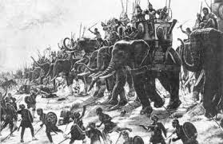
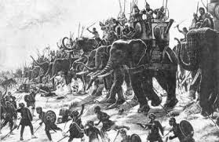
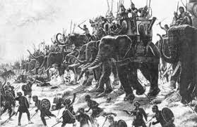

După ce Roma a anexat Italia de Sud, ea s-a apropiat de Sicilia, o insulă bogată și importantă pentru controlul navigației în Marea Mediterană. Sicilia era împărțită între orașele grecești, conduse de Siracuza, în partea de est, și cartaginezi, în partea de vest. Rivalitatea dintre aceștia a oferit Romei ocazia de a interveni și de a-și extinde influența.
Conflictul a început când mamertinii, mercenari din Campania, au ocupat orașul Messana și au intrat în conflict cu Siracuza. După ce aceștia au fost înfrânți, Cartagina a ocupat orașul, iar mamertinii au cerut ajutor Romei. Roma a intervenit, i-a alungat pe cartaginezi, iar Cartagina a declarat război Romei, declanșând astfel Primul Război Punic.
Inițial, Cartagina și Siracuza s-au aliat, dar Roma a forțat Siracuza să încheie pace. Apoi, romanii s-au confruntat cu flota cartagineză, construindu-și propriile corăbii de război, dotate cu poduri cu cârlige pentru abordaj. Cu această tactică, romanii au obținut prima lor mare victorie navală la Mylae, în anul 260 î.Hr., sub comanda consulului Duilius.
Încurajați de succes, romanii au debarcat în Africa pentru a ataca Cartagina pe propriul teritoriu. Însă cartaginezii, cu ajutorul generalului spartan Xantip, au reorganizat armata și au învins trupele romane, luându-l prizonier pe consulul Regulus. Războiul s-a mutat din nou în Sicilia, unde luptele au continuat cu rezultate mixte pentru ambele tabere.
În cele din urmă, romanii au construit o nouă flotă, finanțată printr-un împrumut de la Senat, și au obținut victoria decisivă în bătălia navală de la insulele Aegates (241 î.Hr.). Cartagina a fost obligată să cedeze Sicilia, să plătească despăgubiri și astfel insula a devenit prima provincie romană. Câțiva ani mai târziu, Roma a mai anexat și Sardinia și Corsica, profitând de slăbirea Cartaginei.
Victoria din primul război punic a transformat Roma într-o mare putere maritimă. Marea Tireniană a devenit „mare nostrum”, iar Roma și-a extins autoritatea în Marea Adriatică, înfrângând pirații iliri (229–228 î.Hr.). Pe uscat, Roma a obținut victoria asupra galilor la Clastidium (222 î.Hr.) și a cucerit orașul Mediolanum, extinzându-și controlul până la Alpi, întemeind noi colonii și construind drumuri precum Via Flaminia.
Războiul Mercenarilor, cunoscut și ca Războiul Fără Cruțare, a fost o revoltă a soldaților angajați de Cartagina la finalul Primului Război Punic (264–241 î.Hr.), sprijinită de răscoale ale așezărilor africane aflate sub control cartaginez. A durat din 241 î.Hr. până în 238 î.Hr. sau începutul lui 237 î.Hr. și s-a încheiat cu înfrângerea rebelilor de către Cartagina.
Conflictul a început din cauza unei dispute privind plata soldelor către 20.000 de soldați străini care luptaseră pentru Cartagina în Sicilia. Când părea că s-a ajuns la un compromis, armata s-a răsculat sub conducerea lui Spendius și Matho. Aproximativ 70.000 de africani din teritoriile dependente s-au alăturat răscoalei, aducând resurse și bani. Inițial, Cartagina a fost înfrântă sub comanda lui Hanno. În 240 î.Hr., Hamilcar Barca (tatăl lui Hannibal) a preluat comanda și a început să aibă succes, încercând la început să-i atragă pe rebeli prin blândețe. Pentru a împiedica acest lucru, rebelii au torturat și ucis 700 de prizonieri cartaginezi, inclusiv pe Gisco, iar conflictul a devenit extrem de sângeros de ambele părți.
Până la începutul lui 237 î.Hr., rebelii au fost învinși și orașele lor recucerite. Cartagina a pregătit o expediție pentru a recuceri Sardinia, unde soldații rebeli uciseseră toți cartaginezii. Însă Roma a declarat că aceasta ar fi o cauză de război și a ocupat atât Sardinia, cât și Corsica, încălcând tratatul de pace recent încheiat. Acest act este considerat drept una dintre principalele cauze ale izbucnirii celui de-Al Doilea Război Punic în 218 î.Hr.
